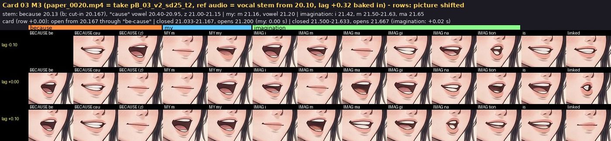
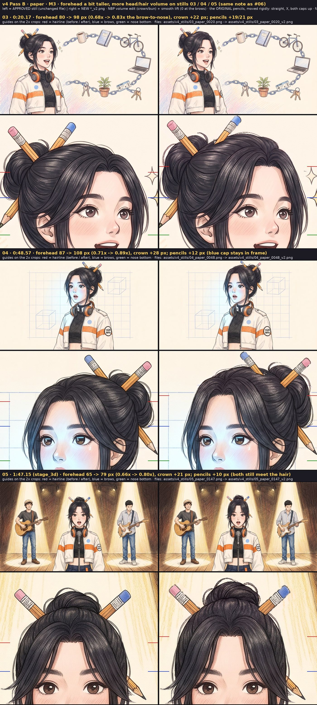
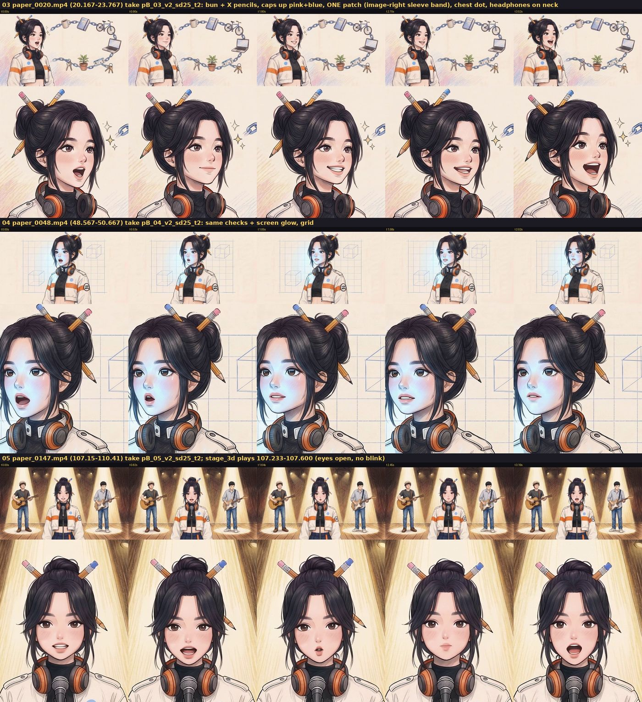
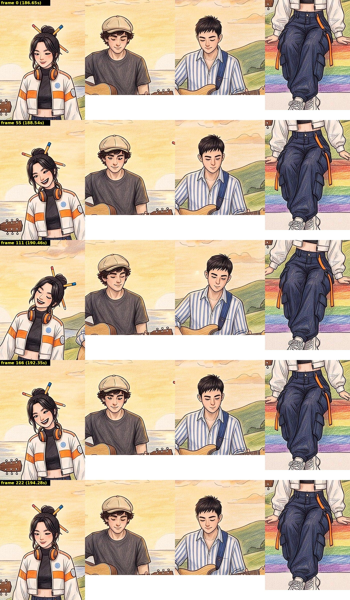
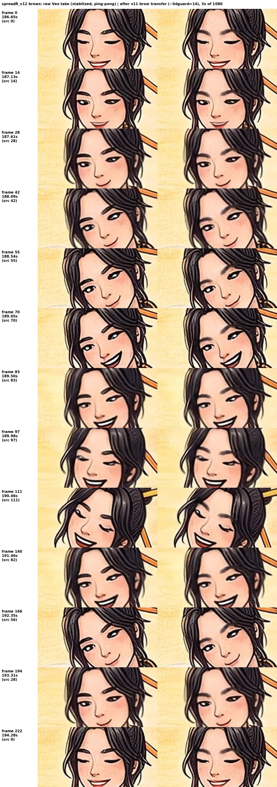
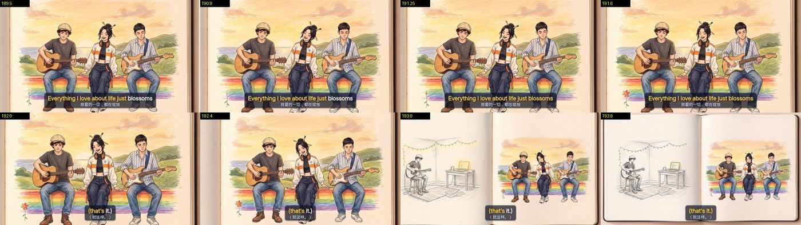
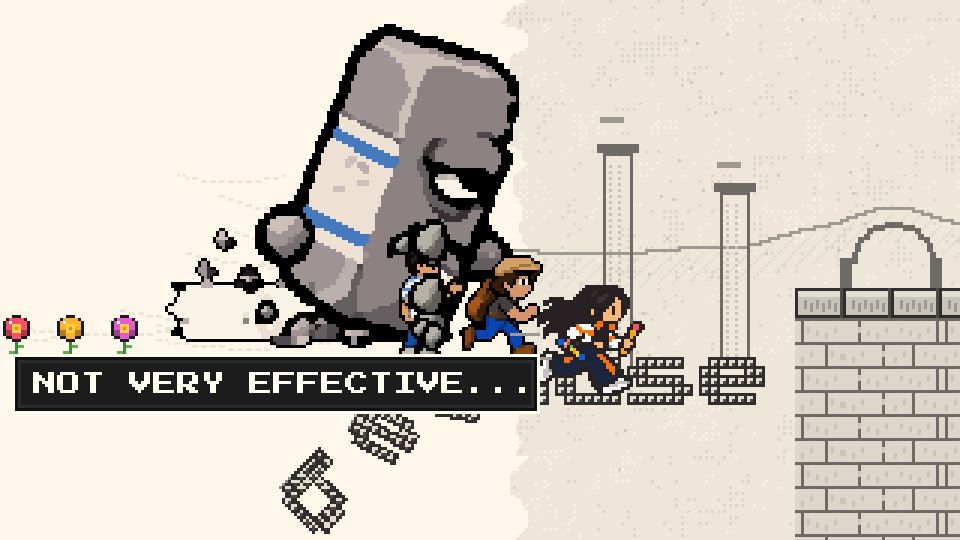
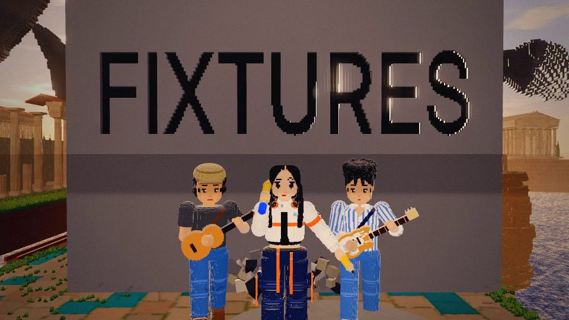

All five Pass B units are in and full_v4 is rendered. Watch it, mark the items below, then press Copy answers and paste the result into chat. After your notes come the 1080p master, the thumbnail and the three 9:16 cuts.
Watch locally: engine/out/review/full_v4.mp4 (540p, 3:23, with audio). Paper spend $25.00 of its $40 cap; project about $96 of $500.
| Check | Result |
|---|---|
| Luma drops (one-frame flashes) | 33 drops, all on deliberate cuts. The 2:49–2:54 run is the speedrun stutter and matches v3.1 frame for frame. |
| Cuts vs beat grid | 72 on grid, 13 within 20–60 ms (most are measured vocal cues). One is 94 ms off at 0:52.6, the same as in v3.1. |
| Canon crops | Pass on every new card and on the outro layer (pencils, caps, patch, headphones, pants). |
| Page errors | None; the same 4 harmless 404s as v3.1. |
v3 had your lips one word early: the "m" of "my" sat on the "cause" of "because". The vocal stem puts "because" at 20.13, "my" at 21.16 and "imagination" at 21.42. The new card opens on "because" and closes for "my" at 21.03–21.17, then for "imagination" at 21.50–21.63.
Listen: media/cutscenes/paper_0020/preview_540p_with_song.mp4 (or preview_540p_with_song_context.mp4, with 1 s of song either side).

The same fix as #06: about 20% more forehead and more volume in the bun. The pencils are the originals, moved straight, and nothing below the brows changed. The approved stills are kept; the cards were re-generated from these.


You liked the brows and called out the stillness. The old Veo clip only moved the heads; the bodies were frozen. This is a new take with the v11 brows put back. Body motion is now about three times higher, and frozen frames dropped from about 100 to about 20 (short dips where a strum or sway turns around).
Watch: engine/out/review/passB/paper/m3c_184-197_spread.mp4 (also inside full_v4).




Act 1's "because" bridge sits over the held "blossoms".
The Eraser chews the letters of "because" at 18.1–20.1 while you hold "blossoms". The real "because" starts as card 03 cuts in. I'd leave it: the Eraser eats the word just before you sing it.
No subtitle for "because" on card 03 (20.17–21.04).
The card only captions "my imagination…", so the sung "because" goes uncaptioned for about 0.9 s. I recommend adding it. It's a small change to the card and to act 1's subtitles.

My flag from the review: at 540p the word reads as flat black type on a plain grey box, not carved stone like the 1:26.9 slab and still 09. A redo would carve the grooves and add stone texture to the face, with no gen cost.